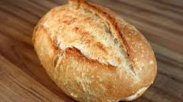

Para fazer um pão caseiro tradicional, fofinho e fácil, precisa apenas de ingredientes básicos que provavelmente já tem na sua cozinha. Esta receita rende dois pães grandes.
Misture a água morna, o açúcar e o fermento numa tigela grande.
Deixe repousar por 5 minutos até espumar levemente.
Adicione os ovos, o óleo e o sal à mistura.
Mexa bem com uma colher para homogeneizar tudo.
Coloque a farinha de trigo aos poucos, mexendo sempre.
Transfira para uma bancada quando a massa começar a desgrudar da tigela.
Bom proveito.